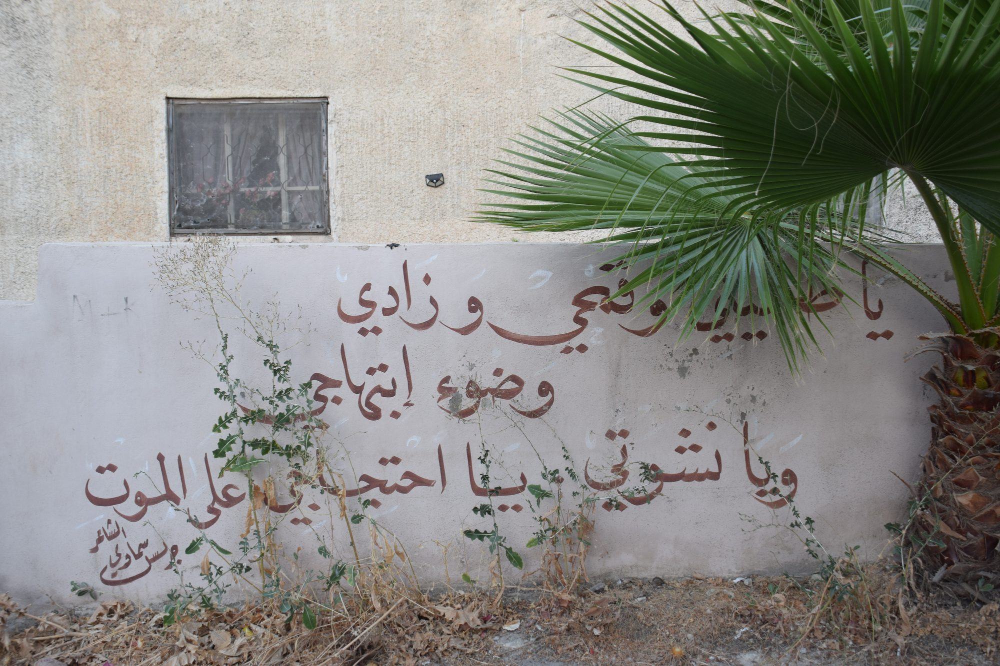
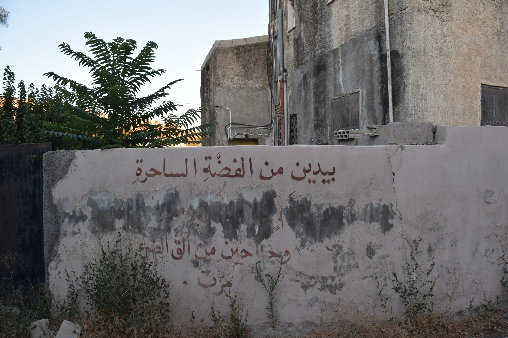
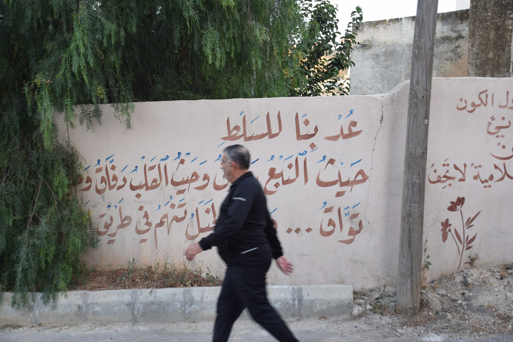
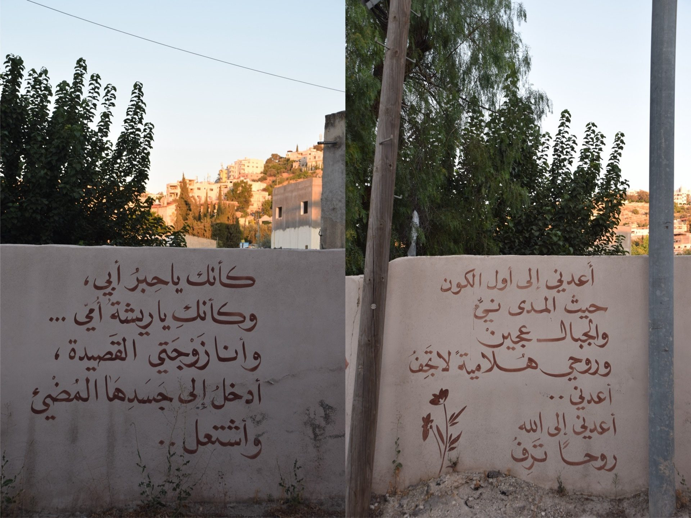
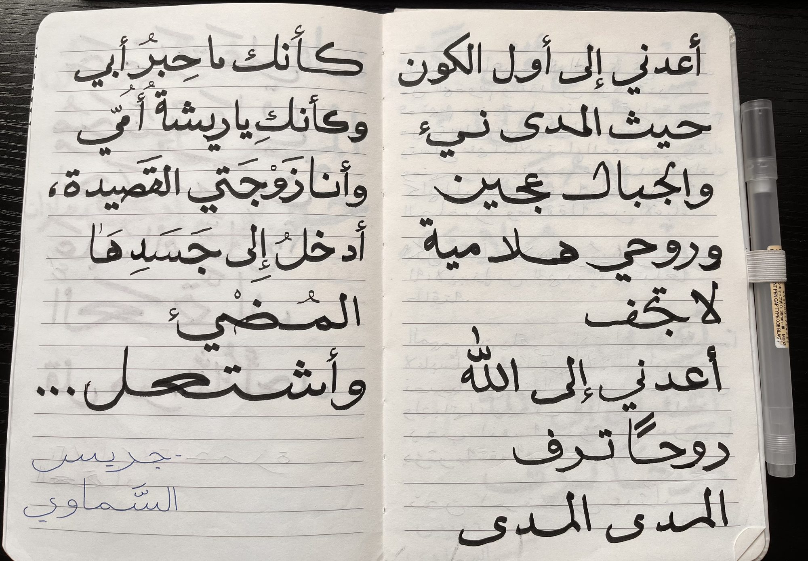
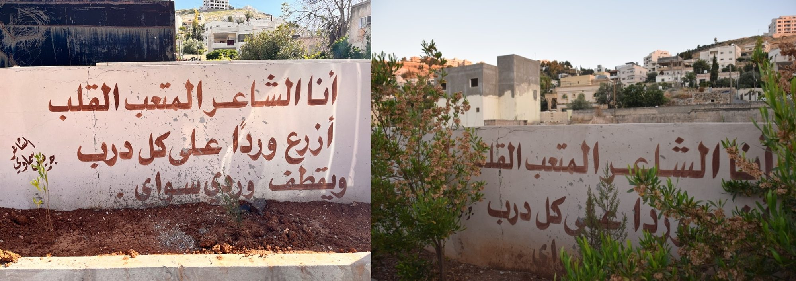
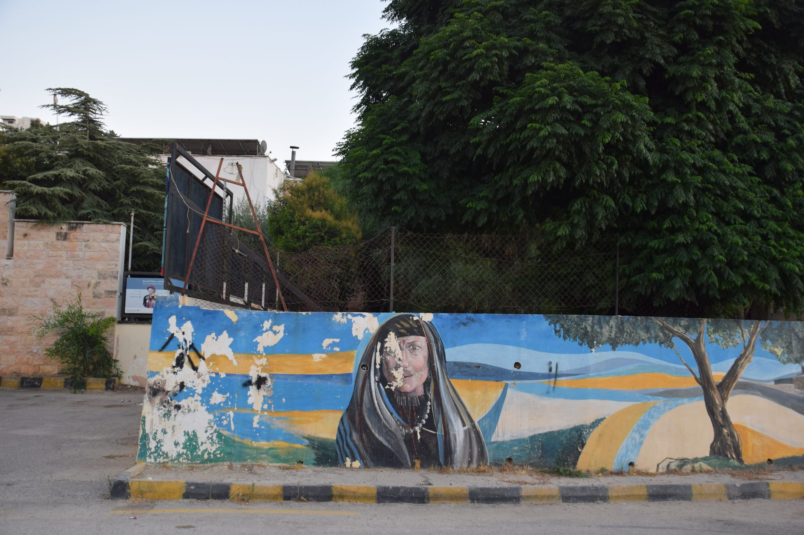
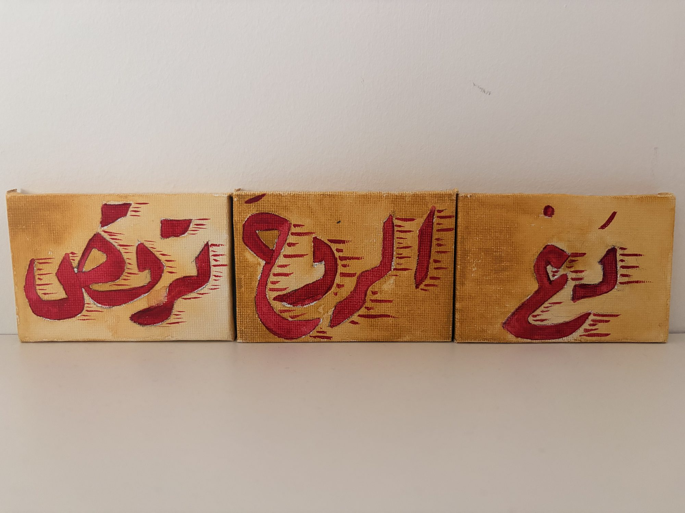

هذه حكاية مسرودة من خلال شارع واحد في الفحيص في الأردن. هو شارع يجبرك أن تُبعِد أوراق الشجر...

وأن تبحث خلف السيارات...

وتتخيّل ما كان هناك على جدرانٍ أكلها الدهر...

تفعل ذلك في سبيل الأدب، في سبيل شعرٍ يبدو أنه لا يوجد إلا في هذا الشارع. هو شارع الحيوانات...

والإنسان كلاهما يترك أثره...

ومنها ما بقي محفوظاً جيداً...

فتفعل ما تفعله دائماً حين تشعر بالعجز: تنسخ وتحاكي قدر الإمكان...

تدوّنها، لأن هذا الشعر حيّ ويتحوّل، ولا تعلم ما الذي سيتغير في العام القادم...

فجأةً يلاحظ شخصٌ وجودك ومهمتك، ويدرك أن سيارته عقبة أمام تدوينك، فيعتذر بابتسامة ودية ويُزيح سيارته، وتحادثه أنت على أمل أن يفيدك بمزيد من المعلومات.
أنت تعرف اسم الشارع، وأنه سُمّي باسم شاعر أردني من الفحيص، فهذا مكتوب على اللافتة...

لكنك لا تعرف ما بعد ذلك: هل رُسمت هذه الجدران تكريماً للشاعر جريس السماوي، أم بناءً على طلبه بصفته وزيراً للثقافة؟ ومتى كان ذلك؟
هو أيضاً لا يعرف، لكنه يوجّهك إلى حابس، صاحب السوبرماركت الذي قد يكون على علم بالأمر، ويؤكد لك أنه "مش رح يحبسك"...
فتجلس مع حابس وتتناقشان في أمور كثيرة، أمورٍ تندم الآن على عدم تدوينها في أي مكان. لديك ذكريات غامضة عن حديثكما حول الزواج، وكيف أخبرك حابس أنه لن يتمكن أبداً من فهم النساء، حتى في سنّه المتقدمة. يقول لك: "المرأة زي النحلة، بتغزك وبعدين ما بتعرف لوين بتروح". يقول ذلك، لكن حين تحدّث عن زوجته الراحلة، كان واضحاً لك مدى احترامه لها.
كان يدرّس مادتَي الدين واللغة العربية في المدرسة الأرثوذكسية. تتناقشان في الكتابة على الحائط، التي لا يملك عنها الكثير من المعلومات. يتحدث إليك عن الجداريات...

وكيف تُهمَل هي أيضاً، وكيف يُهمَل الفن والكتابة بشكل عام. لذا تطمئن إليه بما يكفي لتخبره أنك تفكر في كتابة مقال عن هذا الشارع وهذا الشعر، لكنه يقول لك: "ليش؟ لمين؟". تنتهي المحادثة بلطف، وأنت سعيد لأنك تحدثت إلى شخص لا تعرفه، وإلى شخص أكبر منك سناً، فكثيراً ما تشعر بأنك في عالمك لا تتحدث إلا مع من هم في مثل سنّك.
تنتبه إلى مكالمات فائتة على هاتفك؛ لقد تأخرت عن موعد العشاء. لكن لا يسعك إلا أن تنبهر بالألوان المذهلة لغروب الشمس أمامك...
فتسعى إلى مُطَلٍّ أفضل، وتُكافأ على هذا القرار بكلاب أليفة...
تخبرك المرأة التي برفقة الكلاب أن "هما اللي متبنيني". فتعود إلى بيتك وروحك مليئة بالسكينة، مقتنعاً بأن العفوية تنبع من أبسط الأشياء. اللحظات الإنسانية موجودة في كل مكان، ويجب تقديرها جميعاً؛ ولكن لكي تتمكن من ذلك، عليك... أن تدع الروح ترقص.

في النهاية، قد تتقبل أن الأشجار والأعشاب، والطلاء المتقشر، والأوساخ والطين، والقطط والكلاب الضالة، والأطفال الذين يلعبون كرة القدم، والشيوخ الجالسين على كراسٍ بلاستيكية بجانب السوبرماركت، ونغمة سيارة الغاز (أو سيارة البسكويت)، كلها أصبحت جزءاً من الشعر، سواء أكان ذلك مقصوداً أم لا.

رسمة لصوفي أونال (التي أنجزت ذلك دون أن تعرف العربية)
اضغط على الصورة للعودة للصفحة الرئيسية